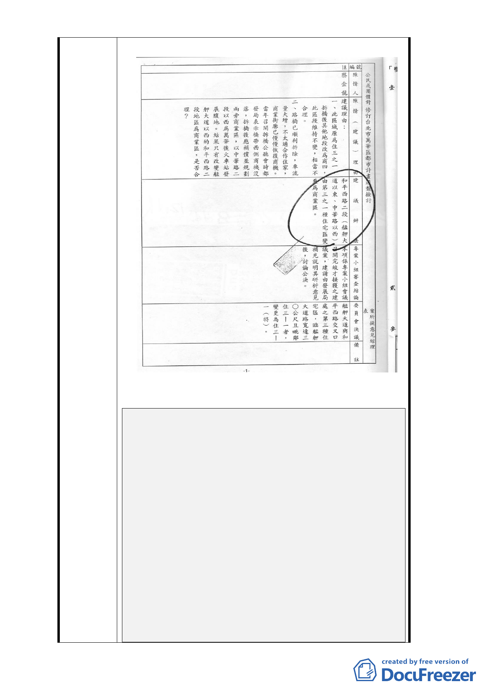

附件一 91 年陳情資料
附件二 91-101 年陳情摘要
爭取台北市和平西路二段與中華二路改為商業區
被駁回再陳情理由：
陳述理由一／
（1） 台北市都委會 99 年 9 月 8 日第 616 次邀請陳情人出席說
明，通過。
（2） 內政部都委會 99 年 12 月 28 日第 746 次沒有通知陳情人
出席，結果被駁回。是台北市都發局或內政部營建暑誰的
錯？都沒有單位承認。
陳述理由二／
（1） 再陳情是「區域通盤」或「專案再提」，兩單位也是互踢
皮球，權責在台北市政府再提，是否內容有缺失或其他原
因被駁回，台北市政府就不再重提，又是誰的錯？
（2） 「以第 82 條規定期限內申請復議 … 」所以駁回！
沒有通知陳情人出席？
根本不知道開會日期？
怎麼會知道開會結果？
- 19 -